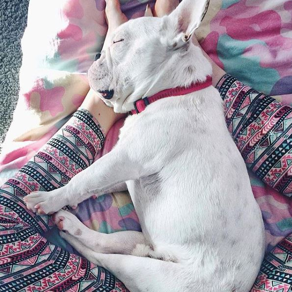
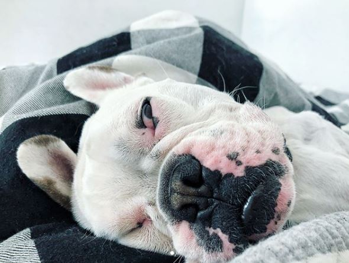

Девіз французького бульдога: «Любити того, хто тебе приручив».
Не варто лякатись атлетичного малюка з насупленим виразом міцної морди, що загрозливо сопе неподалік свого господаря.
Французькі бульдоги - спокійні собаки, які можуть різко повестись тільки, якщо відчують загрозу. Такий розумний і чутливий домашній улюбленець добре розуміє інтонацію голосу господаря і старанний у навчанні. За ним легко доглядати і так само легко перегодувати - тому Вам слід бути стійким до голодного погляду гладкого коротуна.
Французькі бульдоги, яких насправді було виведено в Англії, походять від згаслої породи іспанських бульдогів аланів і англійських бульдогів. Первісне призначення цих міцних коротунів - собачі бої, після вдалої роботи над породою зацікавлених собаківників, вони перетворились на домашніх собак - винищувачів гризунів. Шлях у вище товариство породі відкрили естетичні французи, яким припала до смаку незвичайна зовнішність грізних чотирилапих малюків.
| Французький бульдог | Англійський бульдог | |
| Група за стандартом | Компаньйон | Пінчер, шнауцер |
| Походження породи | Бійцівська англійська | |
| Характер | Безстрашний, грайливий | Мужній, безстрашний, апатичний |
| Розміри | Компактний, сягає не більше 38 см при вазі в 10-15 кг. | Більший і важчий: до 42 см в холці при вазі 25 кг |

Французькі бульдоги прекрасні друзі, якщо їх правильно виховувати. Люблячі та лагідні до своїх господарів, грайливі та дружні до оточуючих, вони можуть стати улюбленцем всієї сім'ї!
